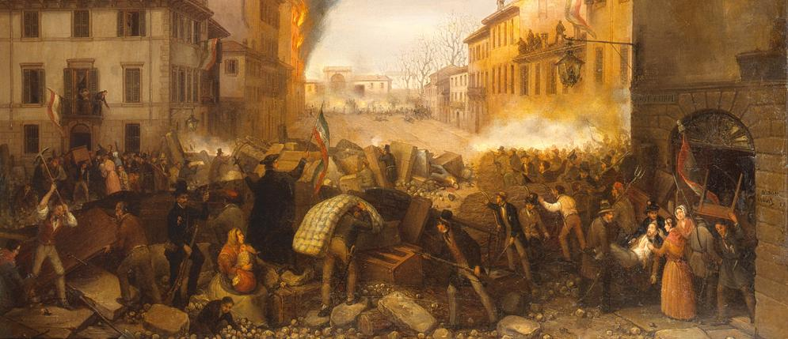

Le prime ribellioni in Italia
I primi moti liberali, il programma di Mazzini e dei moderati, il '48 in Italia
La prima Guerra d'Indipendenza

DOPO IL '48

I primi moti liberali, il programma di Mazzini e dei moderati, il '48 in Italia
Derivato dal verbo risorgere che significa sollevarsi, rinascere, il sostantivo RISORGIMENTO si è presto imposto come equivalente di rinascimento o risurrezione “nazionale”.
La tradizione vede nell’opera di padre Bettinelli Il Risorgimento dell’Italia dopo il Mille, pubblicato nel 1775, il primo documento in cui il vocabolo è esplicitamente applicato alla storia italiana.
Bisogna però arrivare alla fine del Settecento e agli scritti di Vittorio Alfieri
per veder riassumere nella parola risorgimento il senso di rinascimento nazionale e l’idea di liberazione del suolo italiano dalla presenza straniera.
L’inserimento ufficiale del termine nella sfera pubblica data dal 17 novembre 1847 con la pubblicazione, a Torino, del primo numero del giornale di Cesare Balbo e Camillo Benso di Cavour “Il Risorgimento”, il cui programma mette esplicitamente sullo stesso piano l’indipendenza dell’Italia e l’unione politica ed economica di tutti gli stati della
penisola orientati ad accettare l’idea del progresso.
Ma la fortuna del termine ha di gran lunga superato i limiti del dibattito ideologico della metà dell’Ottocento per affermarsi anche alla fine del secolo.
Secondo un’accezione più vasta del termine, la portata storica del
Risorgimento non si limita all’unificazione politica e territoriale dell’Italia;
indica anche un vasto movimento culturale e ideologico che avrebbe addirittura le sue radici nel Settecento e supererebbe di gran lunga il termine cronologico della costruzione territoriale del paese.
Questa concezione ha come corollario l’idea che il Risorgimento è un tutto di cui l’unità territoriale sarebbe sì una delle manifestazioni più importanti, ma non certo la sola.